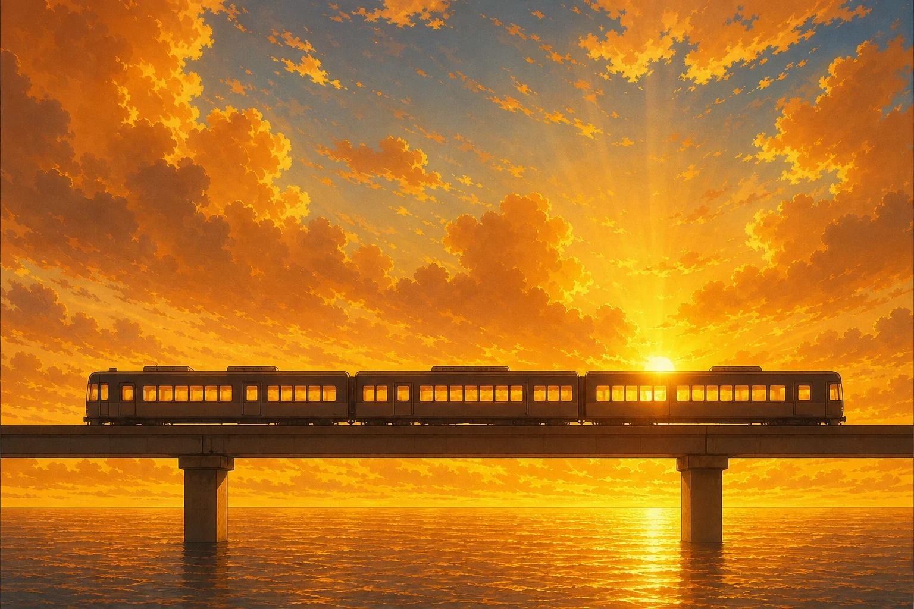
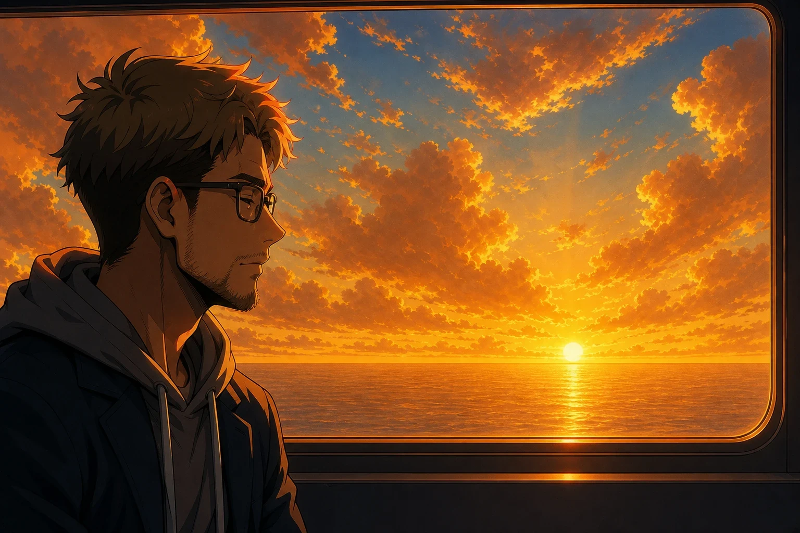
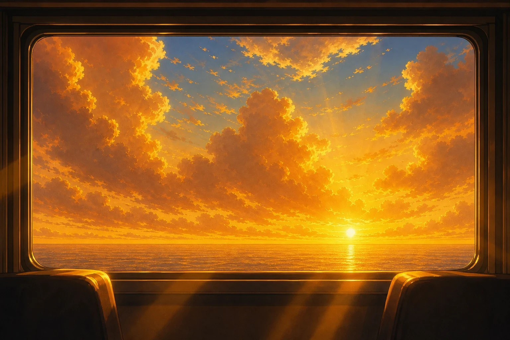
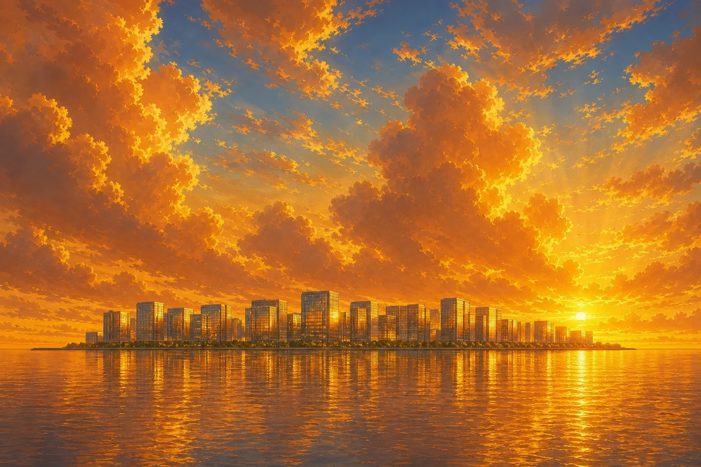
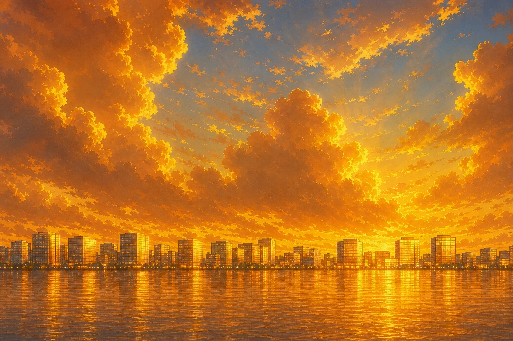
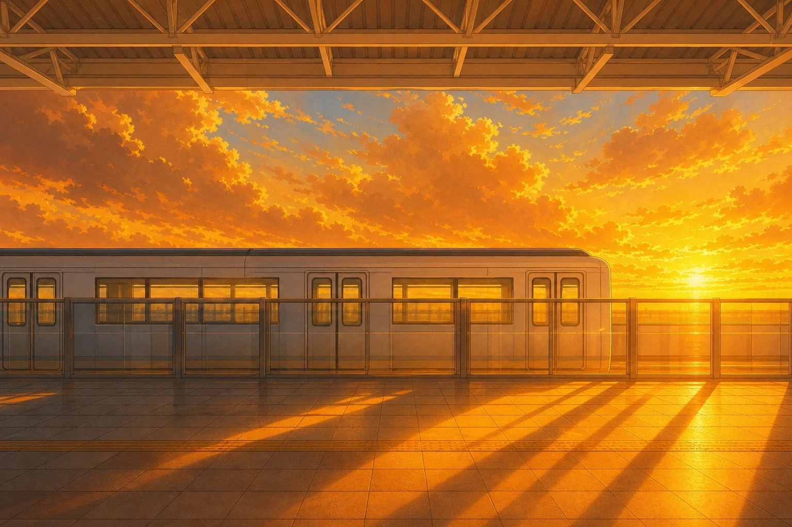
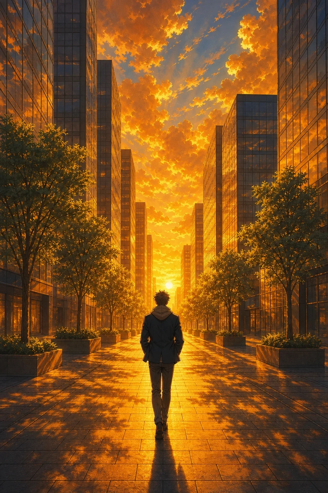

Opening: masters for the intro and verse 1
Your method: simple, flat compositions (side-on or frontal), strong light and a big painted sky, animated as layered cels. Your approved monorail shot (C) is the style reference for every master below, so they share its light and palette. Seven shots need new art in this batch; the phone, the logo and the ID card are drawn in code, and the gate uses your approved location. Pick what works, mark "redo" on the rest. Nothing is animated until you've picked. Batch cost: $0.48 of Replicate (GPT Image 2). Click an image to see it full size.
Approved: shot 2, the monorail (C)
Live in the player: index.html.
New masters
Staging: Camera at sea level facing the sunrise; horizon a straight line near the bottom; only sky, sun and sea. Tilted down in the player.
My check: Passes: no land, boats or birds; the clouds follow perspective, no repeats in a line.
Prompt (GPT Image 2, with approved C attached as the style reference)
Match the painting style, colours and golden light of the first attached image. anime screenshot, anime coloring, 2d, cel shading, clean lineart, detailed anime background art, hand-painted anime background, no humans, scenery, tall vertical view at sea level looking toward the sunrise over a flat calm sea. The horizon is a straight line near the bottom edge. A huge sky fills everything above it: towering cumulus clouds lit gold from below, light rays fanning up from the sun, which sits on the horizon in the centre. No land, no buildings, no boats, no birds.Dominant gold and orange, broad deep amber shadow, sparse pale blue sky between the clouds.

Staging: Flat side view close to the beam; three cars fill most of the width on top of the level beam; the sun low behind them.
My check: Passes: the train sits on the beam with both ends visible, no second track, no city. Will be cut out and slid right fast.
Prompt (GPT Image 2, with approved C attached as the style reference)
Match the painting style, colours and golden light of the first attached image. anime screenshot, anime coloring, 2d, cel shading, clean lineart, detailed anime background art, hand-painted anime background, no humans, scenery, flat side view close to an elevated concrete monorail beam at sunrise. The beam runs level across the whole width of the image just below the middle. A monorail train of three cars sits on top of the beam and fills most of the width, dark in silhouette, its windows glowing warm. The big sun sits low behind the train, right of centre, with light rays around it. The sea below reflects the gold sky. No city, no second track, no people.Dominant gold and orange, broad deep amber shadow, sparse pale blue sky between the clouds.

Staging: Flat side view inside the carriage: his profile in the left third facing right, dark against a big bright window; the sea far below, horizon low.
My check: Mostly passes: glasses, short beard, grey hoodie under a navy blazer, looking out at the sea (no track visible, correct for a side window). Unsure: in the backlight his hair reads darker than the approved dark-blond; the face is in shadow so the fair skin barely shows.
Prompt (GPT Image 2, with approved C attached as the style reference, and his approved sprite)
Match the painting style, colours and golden light of the first attached image. anime screenshot, anime coloring, 2d, cel shading, clean lineart, detailed anime background art, hand-painted anime background, flat side view inside a monorail carriage at sunrise. In the left third, the head and shoulders of the man from the second attached image in profile, facing right, dark and in shadow against the light, with glasses, a short beard, a grey hoodie under a navy blazer. Behind him a large window fills the rest of the image: a calm sea far below, the horizon low in the window, the rising sun and golden clouds. Warm light rims his hair and glasses. No other people, no text.Dominant gold and orange, broad deep amber shadow, sparse pale blue sky between the clouds.

Staging: Frontal view of one side window from the seat opposite; seat backs and frame dark; sea far below, horizon low, the sun.
My check: Passes: side view shows only sea and sky, no track; light shafts fall into the carriage.
Prompt (GPT Image 2, with approved C attached as the style reference)
Match the painting style, colours and golden light of the first attached image. anime screenshot, anime coloring, 2d, cel shading, clean lineart, detailed anime background art, hand-painted anime background, no humans, scenery, frontal view of one wide side window of a monorail carriage, seen from the seat opposite. The window fills the middle of the image, its frame and two seat backs dark in silhouette at the bottom. Through the window: a calm sea far below, the horizon low in the window, the rising sun and golden clouds, shafts of warm light falling into the carriage. No track or beam outside the window, no people, no text.Dominant gold and orange, broad deep amber shadow, sparse pale blue sky between the clouds.

Staging: Flat side view from sea level; the island city a band on the horizon with both ends visible; big sky above.
My check: Passes: an island with open sea beyond both ends, glass glowing, no landmark tower or mountains.
Prompt (GPT Image 2, with approved C attached as the style reference)
Match the painting style, colours and golden light of the first attached image. anime screenshot, anime coloring, 2d, cel shading, clean lineart, detailed anime background art, hand-painted anime background, no humans, scenery, flat side view from sea level. A man-made island city of glass office towers stands on the horizon across the middle of the image, both ends of the island visible with open sea beyond each end, its glass catching the low sun and glowing gold. A huge sky with towering golden clouds fills the upper two thirds. The calm sea in the lower third reflects the towers. No mountains, no boats, no bridge, no single landmark tower.Dominant gold and orange, broad deep amber shadow, sparse pale blue sky between the clouds.

Staging: Same staging.
My check: Fails one check: the skyline runs off both edges, so it reads as a coastline, not an island.
Prompt (GPT Image 2, with approved C attached as the style reference)
Match the painting style, colours and golden light of the first attached image. anime screenshot, anime coloring, 2d, cel shading, clean lineart, detailed anime background art, hand-painted anime background, no humans, scenery, flat side view from sea level. A man-made island city of glass office towers stands as a band along the horizon across the middle of the image, its glass catching the low sun and glowing gold. A huge sky with towering golden clouds fills the upper two thirds. The calm sea in the lower third reflects the towers. No mountains, no boats, no bridge, no single landmark tower.Dominant gold and orange, broad deep amber shadow, sparse pale blue sky between the clouds.

Staging: Flat side view across the platform; the stopped car behind glass platform doors; low sun, long shadows on the tiles.
My check: Passes: no rails, no people, no signs. The car's doors are closed; in the player they would slide open as a cel.
Prompt (GPT Image 2, with approved C attached as the style reference)
Match the painting style, colours and golden light of the first attached image. anime screenshot, anime coloring, 2d, cel shading, clean lineart, detailed anime background art, hand-painted anime background, no humans, scenery, flat side view across an empty elevated monorail station platform at sunrise. A white monorail car stands at the platform in the middle band of the image, its doors closed, behind a row of glass platform screen doors. Low morning sun from the right throws long warm light and shadows across the tiled platform floor in the foreground. A white steel canopy along the top edge, golden sky above the car roof. No rails, no people, no text or signs.Dominant gold and orange, broad deep amber shadow, sparse pale blue sky between the clouds.

Staging: Frontal view down a wide street between glass towers; the low sun at the end; him small in the middle, from behind.
My check: Mostly passes: approved outfit from behind, one figure, no signs. Flaw: a low hill at the end of the street (the island is flat).
Prompt (GPT Image 2, with approved C attached as the style reference, and his approved sprite)
Match the painting style, colours and golden light of the first attached image. anime screenshot, anime coloring, 2d, cel shading, clean lineart, detailed anime background art, hand-painted anime background, frontal view down a wide straight pedestrian street between glass office towers at sunrise, one-point perspective, the street centred. The low sun sits between the towers at the end of the street, with long warm light and deep amber shadows. In the middle of the street, small, the man from the second attached image seen from behind, walking away, grey hoodie under a navy blazer, short dark-blond hair. Trees in planters along both sides. No other people, no cars, no text or signs.Dominant gold and orange, broad deep amber shadow, sparse pale blue sky between the clouds.
Revised shot list, intro and verse 1 (0–37 s)
Every shot is flat and readable. The chorus and verse 2 are planned in the next batch.
| # | Time | Lyric | Source | What we see · staging · motion |
|---|---|---|---|---|
| 1 | 0.0–3.6 | master: m-sky | A huge golden dawn sky over a flat sea. Camera at sea level facing the sunrise; horizon low; only sky, sun and sea. Slow tilt down the tall plate; clouds drift on their own layer; the sun flares on the first hit. | |
| 2 | 3.6–5.2 | approved: C | The monorail in silhouette on its beam against the sunrise. Flat side view; beam level in the lower quarter. The train cel slides right. | |
| 3 | 5.2–6.8 | master: m-pass | Close, the carriages pass in front of the sun. Flat side view close to the beam; the cars fill the lower half; big sun low behind them. Train cel slides fast right; light flickers through the gaps between cars. | |
| 4 | 6.8–10.0 | master: m-him | Him in the carriage, dark profile against the bright window. Flat side view inside: his head and shoulders in profile in the left third, a big window behind with sea and sunrise. Light sweep over the window; dust drifts; a slow push. | |
| 5 | 10.0–11.6 | drawn | The phone's new-hire app: ようこそ. Frontal phone screen, simple map without the odd circle. Text types in on 2s. | |
| 6 | 11.6–12.8 | drawn | Small 天川 logo and the first staff credit over the sky. No "opening theme" label. Logo shine. | |
| 7 | 12.8–16.0 | 朝のモノレール 窓の外 | master: m-window | The window: seat backs in silhouette, the sea far below, the sun. Frontal view of one side window from the seat opposite; horizon low in the window. Sea glitter and the sky slide past behind the window mask. |
| 8 | 16.0–18.8 | master: m-him (closer) | Closer on his profile; pillar shadows pass over him on the beat. Same camera, tighter. Shadow bands on the beat. | |
| 9 | 18.8–21.2 | 知らない街が 光ってる | master: m-city | The island city on the horizon, towers glinting in the sun. Flat side view from sea level; the skyline a band on the horizon; big sky above. Glints pop on the glass on the beat; clouds drift. |
| 10 | 21.2–24.4 | master: m-station | Arrival: the train stopped at the platform, side-on. Flat side view across the platform; the stopped train fills the middle band; morning light from the right. Doors slide open (cel); light spills out. | |
| 11 | 24.4–27.6 | ポケットに IDカード | drawn | The ID card rises out of his pocket and catches the light. Drawn card over a blurred crop of m-him. Card slides up, glint sweeps. |
| 12 | 27.6–31.6 | master: m-street | He walks out: the company city street, towers side by side, low sun between them. Flat frontal view down a wide street; his small figure from behind in the middle (approved design, back view). He walks (cel bob); the sun flares between towers. | |
| 13 | 31.6–34.0 | 今日からここで 働くよ | approved location: gate-lobby-2103 (to be restyled to match) | The gate; the card taps; the light goes teal. Frontal view of the gates. Drawn card and glow. |
| 14 | 34.0–37.2 | sprite | His face, eyes up; white flash on the chorus. Approved design, eyes-open variant (needs approval). Push in, flash. |